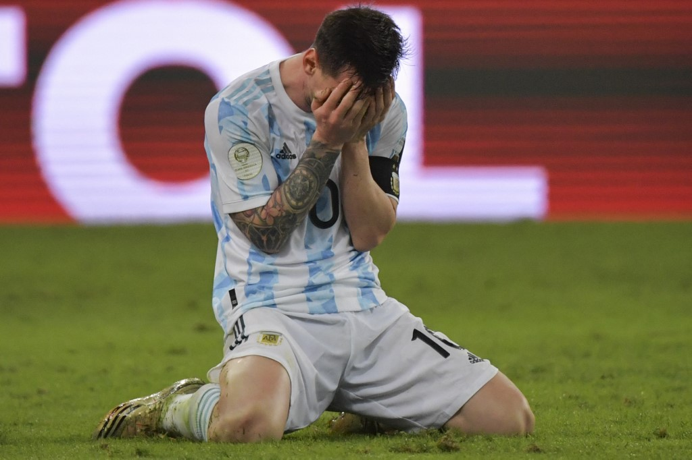
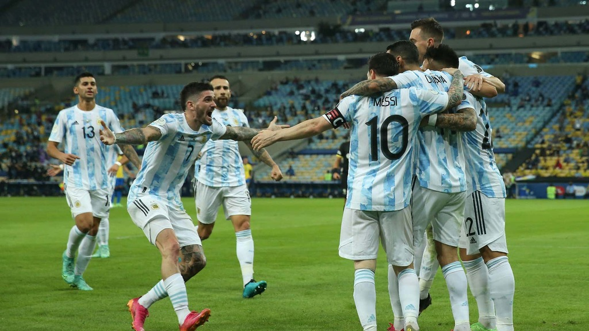

Una final diferente.
La Argentina de Lionel Messi logró su primer título después de 28 años ante Brasil y lo hizo en el Maracaná, el templo del fútbol sudamericano, al vencerlo por 1-0 en la final de la CONMEBOL Copa América. Tan redonda resultó la noche para Messi que la Albiceleste se coronó en el Maracaná, en el mejor lugar posible para el archirrival del anfitrión. Angel Di María, autor de un golazo al minuto 22, junto a un guerrero incansable como Rodrigo De Paul, fueron los héroes de la noche carioca, que dejó a Argentina en el liderato del palmarés histórico con 15 títulos de CONMEBOL Copa América junto a Uruguay, mientras Brasil quedó en 9 coronaciones. "Soñamos tanto con este día. Hoy se rompió (la mala racha) y entró. Teníamos que ganarla (la Copa) acá y se dio así", dijo el 'Fideo' Di María, uno de los históricos de la Albiceleste. Cuando el árbitro uruguayo Esteban Ostojich pitó el final del partido y Messi se dejó caer de rodillas en el Maracaná, miles de personas se lanzaron a las calles del centro de Buenos Aires y de Rosario, la ciudad natal de la 'Pulga'.
Resumen del Partido
En una final soñada que tuvo todos los condimentos, Argentina superó a Brasil por 1 a 0 en el Estadio Maracaná y se coronó campeón de la CONMEBOL Copa América luego de 28 años de sequía. El histórico Ángel Di María, con una exquisita definición, convirtió el único tanto del encuentro en el primer tiempo luego de una gran habilitación de Rodrigo De Paul, otra de las grandes figuras de la noche.
Desde un comienzo, y tomando en cuenta la envergadura de semejante encuentro, el trámite fue muy parejo y friccionado. Varios roces, juego trabado y pocas situaciones de gol dominaron los primeros instantes del partido. El primer balón más cercano al arco rival fue por parte de Brasil, con Richarlison de cabeza para que Neymar remate desde el punto penal, aunque muy incómodo por la marca de Cristian Romero y sin peligro. Y Argentina, en la primera que tuvo, golpeó. En el minuto 21, Rodrigo De Paul acertó un lanzamiento milimétrico desde su propio campo para el pique de Di María, que le ganó la espalda a Renan Lodi, dominó con clase y definió con precisión sobre la salida del arquero Ederson. Un verdadero golazo para el 1 a 0 parcial.
Di María, muy punzante, volvió a asustar a la defensa brasileña en el minuto 28, cortando el balón de izquierda a centro y sometiéndolo a un desvío de Marquinhos para evitar un nuevo tanto. A los 32, en tanto, fue el turno de Lionel Messi, de poca participación en ese primer tiempo, de arrancar y patear con peligro desde fuera del área, cerca del travesaño de Ederson. Brasil, por su parte, culminó el primer tiempo casi sin inquietar el arco de Emiliano Martínez. Con Everton, Paquetá y Neymar bien contenidos, el equipo de Tite careció completamente de ideas para quebrar el bien abroquelado conjunto de Lionel Scaloni, que se fue al descanso en ventaja. Ya en el segundo tiempo, lógicamente, Brasil cambió su actitud. Y de entrada, Richarlison tuvo dos ocasiones de peligro. En la primera llegó a convertir, pero fue anulada por posición adelantada. Y en la segunda, Martínez, con una buena atajada, impidió el empate. Lentamente, Argentina comenzó a jugar peligrosamente cada vez más cerca de su arco y Brasil, con más empuje que fútbol, se hizo dueño del partido. El ingreso de Roberto Firmino por Fred cambió la disposición de un Brasil urgido por la igualdad. Sin embargo, el equipo local nunca supo crear un circuito de juego para complicar demasiado a Argentina, que en el segundo tiempo apenas se limitó a ser correcto en las marcas y relevos para neutralizar al rival. Pese a esto, Brasil contó con algunas situaciones, como un disparo del ingresado Gabriel Barbosa que obligó a una soberbia volada de Emiliano Martínez para desviar el balón. Sobre el final, de contraataque, Argentina pudo liquidarlo con dos situaciones inmejorables. Primero Messi falló un mano a mano increíble tras un genial pase de De Paul y luego del propio De Paul tampoco logró concretar tras quedar cara a cara con Ederson. Así las cosas, los minutos se consumieron y Argentina pudo volver a tocar el cielo con las manos. La Albiceleste se corona campeón de la CONMEBOL Copa América luego de 28 años y nada menos que frente a su clásico rival y en el mítico Estadio Maracaná.
